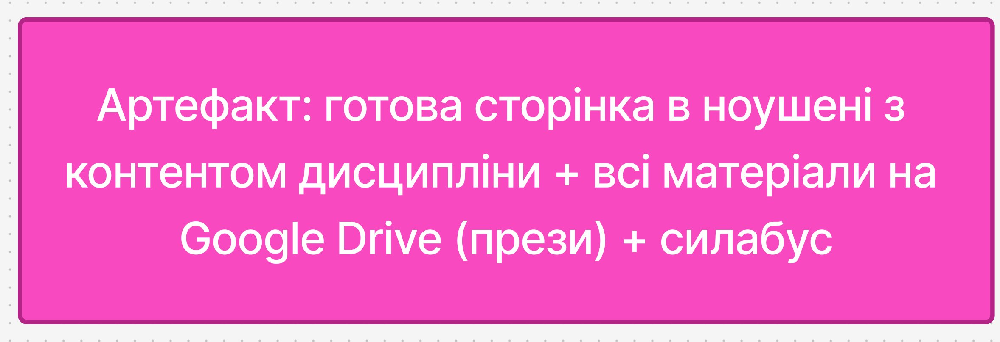
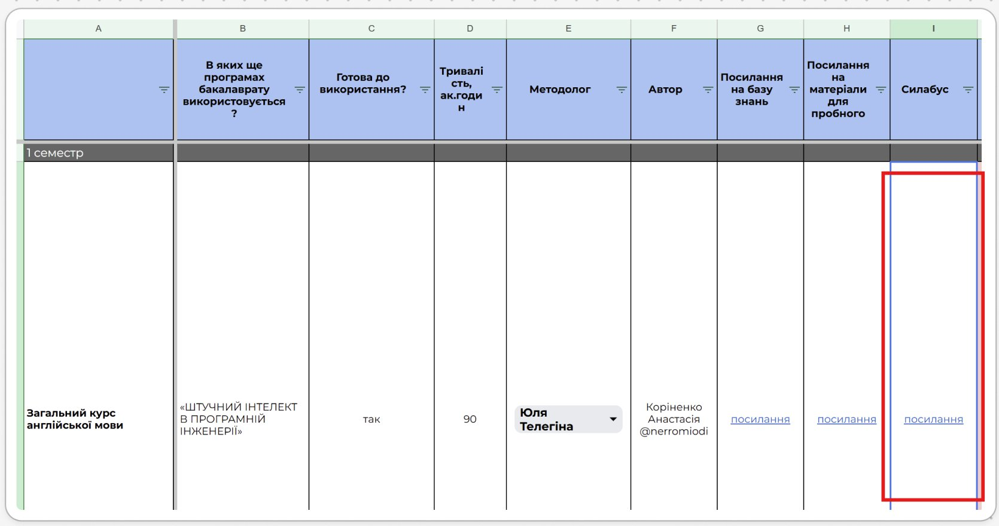
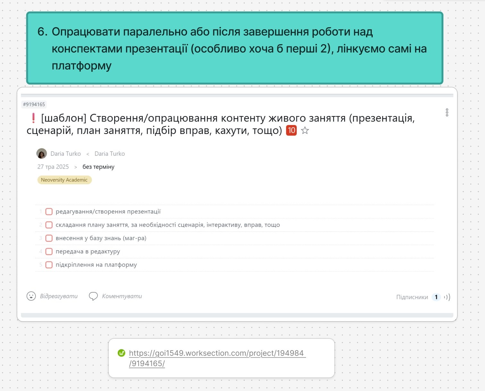
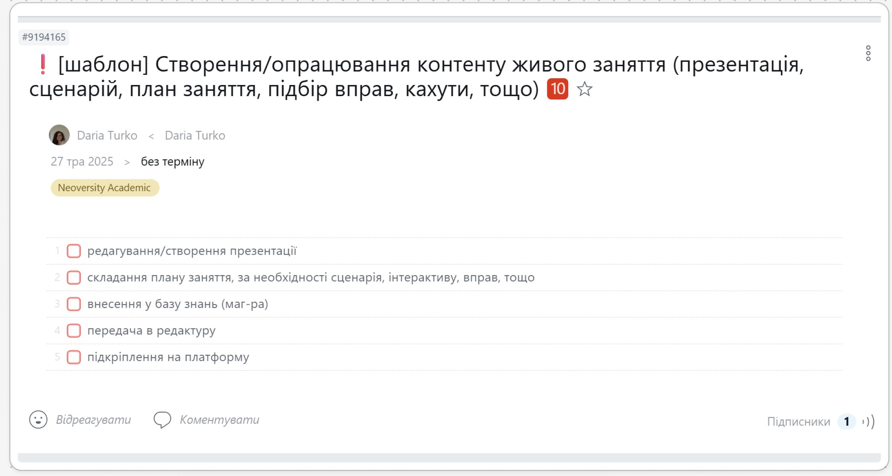
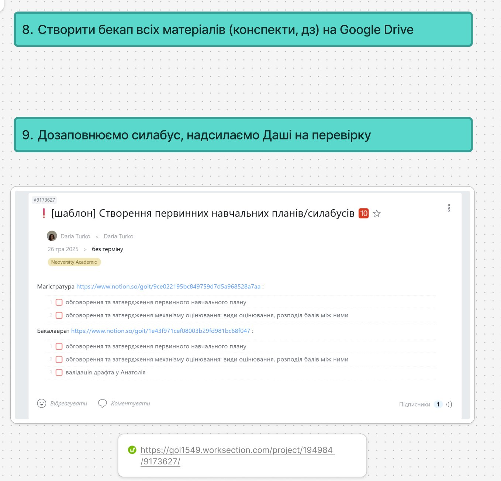
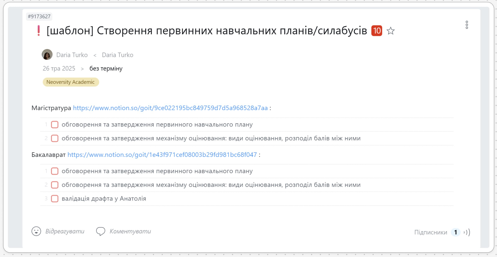

⚙️ #9172991 · Методичне опрацювання контенту теми
⚙️ #9194165 · Контент живого заняття
⚙️ #9173627 · Створення первинних навч. планів / силабусів

Артефакт фази — готова сторінка в Notion з контентом дисципліни + всі матеріали на Google Drive (прези) + силабус
Кроки
1
Домовляємось про формат "вигрузки" матеріалів з автором
▶
- Автор — той хто пише і прилінковує матеріали дисципліни (навіть статті)
2
Вводимо таску "методичне опрацювання контенту теми" на кожну тему
▶
3
Після отримання таски зі внесення — перевіряємо на платформі
▶
4
Паралельно заповнюємо силабус дисципліни
▶

Скрін з бакалаврату — для магістратури вносити дані сюди:
5
У фіналі розробки — пишемо разом з автором огляд дисципліни
▶
- Обов'язково: Особливості дисципліни — про що вона, які пререквізити, результати
- Обов'язково: Структура дисципліни — зверни увагу на оцінювання
- Якщо є: Словничок, навчальні ресурси, інструменти
6
Опрацьовуємо паралельно або після завершення роботи над конспектами презентації (особливо хоча б перші 2), лінкуємо самі на платформу
▶


WS #9194165 · Створення/опрацювання контенту живого заняття
7
За 3 місяці до старту — драфт профілю викладача / ментора
▶
8
Створити бекап всіх матеріалів (конспекти, ДЗ) на Google Drive
▶
9
Дозаповнюємо силабус, надсилаємо Даші на перевірку
▶


WS #9173627 · Створення первинних навчальних планів / силабусів — магістратура → силабус маг-ри в Notion